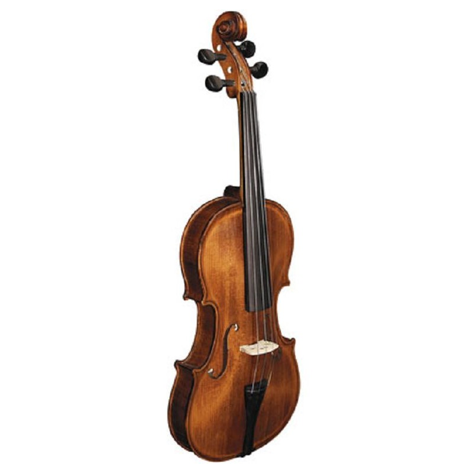

Smuikai - Styginiai | Tamsta - Muzikos prekių parduotuvė
2020.10.30 03:35

Apie mus Kontaktai Tinklaraštis Instrumentai: +37061216666 Pro Audio: +37061818992 tamsta@tamsta.com Paieška LT EN Paskyra 0 Pageidavimai Krepšelis IŠPARDAVIMAS Gitaros Go to Gitaros Akustinės gitaros Klasikinės gitaros (nailoninėmis stygomis) Akustinės gitaros (metalinėmis stygomis) Akustinių gitarų rinkiniai Akustinės gitaros kairiarankiams Elektro-Akustinės gitaros Elektro-Akustinės klasikinės gitaros Elektro-Akustinės gitaros metalinėmis stygomis Elektro-Akustinės gitaros kairiarankiams Elektrinės gitaros Elektrinės gitaros Elektrinių gitarų rinkiniai Elektrinės gitaros kairiarankiams Bosinės gitaros Elektrinės bosinės gitaros Akustinės bosinės gitaros Bosinės gitaros kairiarankiams Bosinių gitarų rinkiniai Ukulelės ir gitalelės Kiti instrumentai Akustinių instrumentų stiprintuvai Stiprintuvai elektrinei gitarai Stiprintuvai elektrinei gitarai (su kolonėle) Stiprintuvai elektrinei gitarai (be kolonėlės) Kolonėlės elektrinei gitarai Gitarinės kolonėlės simuliatoriai Atenuatoriai Stiprintuvai su baterijomis elektrinei gitarai Stiprintuvai bosinei gitarai Stiprintuvai Bosinei gitarai (su kolonėle) Stiprintuvai bosinei gitarai (be kolonėlės) Kolonėlės bosinei gitarai Stiprintuvai su baterijomis bosinei gitarai Stiprintuvų dalys ir aksesuarai Stiprintuvų dalys Perjungimo pedalai Vakuuminės lempos Garsiakalbiai elektrinei gitarai Gitaros ir boso efektai Efektų pedalai elektrinei gitarai Efektų pedalai bosinei gitarai Efektų procesoriai elektrinei gitarai iOS/Android efektų procesoriai elektrinei gitarai Garso Ir ekspresijos pedalai Gitarų sintezatoriai Pradiniai stiprintuvai ir DI box Efektai akustinei gitarai Pedalų dėžės Efektų maitinimas Efektų aksesuarai Stygos Stygos elektrinei gitarai Stygos akustinei gitarai Stygos klasikinei gitarai Stygos bosinei gitarai Stygos ukulelei Stygos mandolinai Stygos bandžai Pavienės stygos gitarai Kitų Instrumentų stygos Brauktukai Brauktukai Brauktukų laikikliai Laidai Instrumentiniai Laidai Kolonėlių laidai Pedaliniai Laidai ir aksesuarai Aksesuarai Kapodasteriai Derintuvai Diržai Slaidai Pakojai Valymo ir priežiūros priemonės Gitarų sieniniai laikikliai Stovai Diržo laikikliai Bevielės sistemos Kiti aksesuarai Dovanos (apranga ir kt.) Dalys ir įrankiai Potenciometrai Derinimo mechanika Ėmiklių perjungėjai Lizdai ir lizdų dangteliai Varžtai Tremolo sistemos Gitaros suktukai ir rankenėlės Ėmiklių dangteliai Apatiniai tilteliai Viršutiniai tilteliai Plastikinės apsaugos Ėmikliai elektrinei gitarai Ėmikliai akustinei gitarai Kitos detalės Įrankiai Ėmikliai kitiems instrumentams Dėklai Dėklai akustinei gitarai Dėklai klasikinei gitarai Dėklai elektrinei gitarai Dėklai bosinei gitarai Dėklai ukulelei Kiti dėklai Būgnai Go to Būgnai Akustiniai būgnai Būgnų komplektai Soliniai būgnai Maršiniai būgnai Elektroniniai būgnai Perkusija Kachonai Melodiniai perkusiniai instrumentai Smulki perkusija Kongai, bongai, ir kiti rankom grojami būgnai Džembės Lazdelės Būgnų lazdelės Būgnų šluotelės Lazdelės kitiems instrumentams Lėkštės Lėkščių komplektai Hi-Hat lėkštės Crash lėkštės Ride lėkštės Splash lėkštės China lėkštės Efektinės lėkštės Orkestrinės lėkštės Gongai Plastikai Stovai, kėdės, pedalai, laikikliai, dalys Pedalai Hi-Hat stovai Stovai soliniam būgnui Tom būgnų stovai Ir laikikliai Lėkščių stovai ir laikikliai Būgnų laikikliai ir adapteriai Būgnų kėdutės Būgnų dalys Kiti stovai Aksesuarai Dėklai Klavišiniai Go to Klavišiniai Akustiniai pianinai ir fortepijonai Skaitmeniniai pianinai Sceniniai pianinai Klavišiniai su akompanimentu Sintezatoriai Sintezatoriai Sempleriai Ritmo mašinos Garso Moduliatoriai Midi klaviatūros Akordeonai ir armonikos Akordeonai Armonikos Dėklai Diržai Aksesuarai Adapteriai Dėklai Suoliukai ir kėdutės Pedalai Klavišinių instrumentų stovai Klavišinių instrumentų stovų priedai Midi interfeisai Stiprintuvai klavišiniams instrumentams Derinimo raktai Apšvietimas Lėkštutės pianino ir fortepijono ratukams Styginiai Go to Styginiai Smuikai Altai Violončelės Kontrabosai Elektriniai styginiai instrumentai Styginių Instrumentų dėklai Stygos Stygos smuikui Stygos altui Stygos čelei Kontraboso stygos Pavienės stygos Aksesuarai ir dalys Priežiūros priemonės Kanifolija Antpetėliai Atramėlės Strykai Pabarzdėliai Surdinos Pogrifiai Kuoliukai Derinimo mašinėlės Stovai Ir laikikliai Derintuvai Ir kamertonai Įgarsinimas Pučiamieji Go to Pučiamieji Lūpinės armonikėlės Chromatinės armonikėlės Diatoninės armonikėlės Tremolo armonikėlės Oktavinės armonikėlės Aksesuarai Klarnetai Saksofonai Altiniai saksofonai Tenoriniai saksofonai Baritoniniai saksofonai Sopraniniai saksofonai Fleitutės Fleitos Trimitai Kornetai Fliugelhornai Trombonai Eufonijos Tūbos Pūstukai Pūstukai saksofonui Pūstukai klarnetui Pūstukai trimitui Pūstukai kornetui Liežuvėliai Liežuvėliai saksofonui altui Liežuvėliai saksofonui tenorui Liežuvėliai saksofonui baritonui Liežuvėliai saksofonui sopranui Liežuvėliai klarnetui Surdinos Pučiamųjų priedai Pučiamųjų dėklai Valikliai Tepalai Dirželiai Stovai Lipdukai pūstukui Ligatūros Lyros Pagalvėlės Kiti aksesuarai Kiti pučiamieji instrumentai Kazoo Didgeridoo Melodikos Elektroniniai pučiamieji Dambreliai Nosinės fleitos Althornai Baritonhornai Studija Go to Studija Programinė Įranga Studijinės garso kolonėlės Aktyvios artimo lauko kolonėlės Aktyvios vidutinio lauko kolonėlės Aktyvios tolimo lauko kolonėlės Pasyvios artimo lauko kolonėlės Žemų dažnių kolonėlės 2.1 kolonėlių rinkiniai Kolonėlių garso valdikliai Studijinių kolonėlių stovai Aktyvios Studijinės kolonėlės namams Garso plokštės USB garso plokštės Thunderbolt garso plokštės Fireware garso plokštės DSP Procesoriai Garso plokščių aksesuarai Ethernet/Dande Garso Plokštės Konverteriai Midi įrenginiai Midi kontroleriai MIDI sąsajos Midi įrenginių dėklai Ritmo mašinos ir Sampleriai Garso Moduliatoriai Priešstiprintuviai Garso įrašymas Master garso įrašytuvai Nešiojami garso įrašytuvai/diktofonai Akustinės Medžiagos Standartinės Absorbacinės Medžiagos Žemų Dažnių Absorbacinės Medžiagos Difuzinės medžiagos Įvairūs akustiniai elementai Studio įrangos komplektai Įvairi studijos įranga Studijos Įrangos Priedai Signalo šakotuvai Studijos Įrangos Stovai Studijos Įrangos Dėklai ir Dėžės Studijos Stalai M-Audio AIR192X4 Pridėti į pageidavimų sąrašą Prekyboje 115,00 € M-Audio AIR192X6 Pridėti į pageidavimų sąrašą Prekyboje 135,00 € Pro Audio Go to Pro Audio Garso kolonėlės Kolonėlių komplektai Koluminės garso sistemos Aktyvios garso kolonėlės Pasyvios garso kolonėlės Aktyvios sceninės monitorinės kolonėlės Pasyvios sceninės monitorinės kolonėlės Aktyvios žemų dažnių kolonėlės Pasyvios žemų dažnių kolonėlės Linijinio masyvo kolonėlės Vidurinių/Aukštų dažnių kolonėlės Portatyvios kolonėlės Garso Kolonėlių Dėklai Kolonėlių Stovai Garso kolonėlių stovų dėklai Sieniniai kolonėlių laikikliai Vamzdžiai Kolonėlėms Garso kolonėlių komponentai Garsiakalbiai Aukštų dažnių garsiakalbiai Kiti garso kolonėlių komponentai Garso kolonėlių priedai Garso pultai Analoginiai garso pultai Skaitmeniniai garso pultai Instaliaciniai zoniniai garso pultai 19" garso pultai Garso pultų dėklai Garso pultų priedai Garso stiprintuvai Garso stiprintuvai Garso Stiprintuvai su Mikšeriu Garso sistemų stiprintuvai Instaliacinė Įranga Instaliacinės kolonėlės Instaliaciniai garso stiprintuvai Instaliacinių garso stiprintuvų priedai Garso Valdikliai Papildomi Instaliaciniai Įrenginiai In-Ear monitorinės sistemos Laidinių In-Ear sistemų kontroleriai In-Ear ausinės In-Ear sistemos In-Ear ausinių dalys In-Ear Sistemos Siųstuvai In-Ear Sistemos Imtuvai In-Ear ausinių stiprintuvai In-Ear Sistemų Komponentai Ausų apsauga Krosoveriai Pro Audio aksesuarai DI-Box Tvirtinimo aksesuarai Juostos Signalo šakotuvai Energijos paskirstytojai Papildomi priedai Bevieliai garso perdavimo įrenginiai Konverteriai Media Grotuvai DJ Įranga ir Efektai Go to DJ Įranga ir Efektai DJ kontroleriai DJ garso pultai DJ grotuvai Patefonai Patefonai Phono priešstiprintuviai Adatėlės Kartridžai Kilimėliai Patefonų priedai DJ garso plokštės ir programinė įranga DJ aksesuarai Dj įrangos dėklai DJ įrangos transportavimo dėžės DJ kompiuterių stovai Apsauginiai DJ Įrangos Viršeliai Vinilų dėžės Garso apdirbimo įranga Go to Garso apdirbimo įranga Vokaliniai efektai Multi efektai Kolonėlių valdymo sistemos Grafiniai ekvalaizeriai Kompresoriai ir Geiteriai Mikrofonai Go to Mikrofonai Vokaliniai mikrofonai Didžiulės diafragmos mikrofonai Mažos diafragmos mikrofonai Instrumentiniai mikrofonai Mikrofonai pučiamiesiems Mikrofonai mušamiesiems instrumentams bei perkusijoms Mikrofonai styginiams instrumentams Mikrofonai akustinėms gitaroms Mikrofonai klavišiniams instrumentams Mikrofonai instrumentų stiprintuvams Boundary mikrofonai Riboninės diafragmos mikrofonai USB mikrofonai Bevieliai mikrofonai Bevielės rankoje laikomos mikrofonų sistemos Bevieliai rankoje laikomi mikrofonai Bevielės ant galvos dedamos mikrofonų sistemos Bevieliai prisegami mikrofonai Bevielės instrumentinės sistemos Bevielės kombinuotos sistemos Bevielės sistemos video kamerai Bevielių sistemų komponentai Bevielių sistemų priedai Ant galvos dedami mikrofonai Prisegami mikrofonai Stereo mikrofonai Video mikrofonai Android & iOS mikrofonai Reporteriniai mikrofonai Matavimų mikrofonai Mikrofonų rinkiniai Instaliaciniai mikrofonai Ilgo kaklo mikrofonai Konferenciniai mikrofonai Modulinės mikrofonų sistemos Mikrofonų komponentai Mikrofonų aksesuarai Stovai mikrofonams Mikrofonų stovų dėklai Mikrofonų stovų alkūnės Mikrofonų dėklai Mikrofonų laikikliai Fantominio maitinimo adapteriai Pop filtrai, apsaugos nuo vėjo mikrofonams Shockmountai mikrofonams Ausinės Go to Ausinės Studijinės ausinės Hi-Fi ausinės Dj ausinės Bluetooth ausinės Ausinės su mikrofonu Ausinės būgnininkams In-ear ausinės Ausinių stiprintuvai Ausinių aksesuarai Ausinių stovai Ausinių komponentai Apšvietimo ir Scenos Įranga Go to Apšvietimo ir Scenos Įranga Apšvietimo rinkiniai Prožektoriai LED Par prožektoriai LED Bar prožektoriai LED Flood prožektoriai LED Pinspot prožektoriai Follow prožektoriai Publikos akintojai PAR korpusai Korpusų priedai IP LED šviesos Judantys prožektoriai BEAM tipo judantys prožektoriai WASH tipo judantys prožektoriai SPOT tipo judantys prožektoriai BAR tipo judantys prožektoriai Judantys efektai Akumuliatoriniai prožektoriai Teatrinis apšvietimas Teatriniai prožektoriai Follow prožektoriai Profile prožektoriai Flood prožektoriai Dekoracinis apšvietimas LED dekoracinis apšvietimas Veidrodiniai rutuliai Dekoracinio apšvietimo priedai Efektiniai prožektoriai Lazeriai LED Panelės Dūmų ir rūko mašinos Dūmų mašinos Rūko mašinos Putu mašinos Burbulų mašinos Sniego mašinos Vėjo mašinos Skysčiai Kvapai Stroboskopai Apšvietimo įrangos kontroleriai DMX kontroleriai DMX sąsajos su kompiuteriu Belaidė DMX įranga Dimeriai Šakotuvai, sujungėjai, daugintuvai Lempos Studijinės lempos Metalo halogenų lempos Apšvietimo įrangos stovai, konstrukcijos, tvirtinimo reikmenys Apšvietimo įrangos stovai Skersiniai Konstrukcijos Vamzdžių gnybtai, jungtis, trosai Flanšai, varžtai, tvirtinimo reikmenys Spansetai Montavimo aksesuarai Apšvietimo įrangos aksesuarai Draperija Apšvietino filtrai Apšvietimo įrangos transportavimo dėžės Apšvietimo įrangos dėklai Apšvietimo įrangos dalys Video Įranga Go to Video Įranga Projektorių laikikliai, stovai Adapteriai Video Mikrofonai Video kameros, registratoriai Kabeliai, jungtys, adapteriai Go to Kabeliai, jungtys, adapteriai Laidai Audio laidai Mikrofoniniai laidai Y tipo laidai Instrumentiniai laidai Laidai gitarų pedalams ir efektams Laidai kolonėlėms DMX laidai USB, UTP, SPDIF & Data laidai Video laidai Elektros laidai Patch laidai Kiti laidai Mikrofoniniai laidai (metrais, be jungčių) Laidai kolonėlėms (metrais, be jungčių) Instrumentiniai laidai (metrais, be jungčių) Skaitmeninių signalų laidai (metrais, be jungčių) Jungtys 3.5mm jack 6.3mm jack RCA XLR PowerCON SpeakON Duomenų jungtys Perėjimai ir adapteriai Daugiagysliai laidai Audio daugiagysliai laidai Audio daugiagysliai laidai (metrais) Sceninės komunikacinės dėžės Aksesuarai Paskirstytojai Maitinimo laidai Stovai, dėžės, dėklai Go to Stovai, dėžės, dėklai Stovai Instrumentų stovai Stovai gitaroms Gitarų sieniniai laikikliai Klavišinių instrumentų stovai Pučiamųjų stovai Styginių instrumentų stovai Stovai stiprintuvams Stovai mikrofonams Kolonėlių stovai Vamzdžiai Kolonėlėms Sieniniai kolonėlių laikikliai Studijinių kolonėlių stovai Apšvietimo įrangos stovai Stovai nešiojamiems kompiuteriams Išmaniųjų įrenginių stovai ir laikikliai Ausinių stovai Natų stovai Natų stovų lemputės Įvairūs stovai Stovų Aksesuarai Meškerės tipo laikikliai mikrofonams Transportavimo dėžės 19" transportavimo dėžės Studijinės įrangos transportavimo dėžės PA įrangos dėžės Apšvietimo įrangos transportavimo dėžės DJ įrangos transportavimo dėžės Priedų dėžės Transportavimo dėžių detalės ir priedai 19" transportavimo dėžių stalčiai Dėžių kampai Kampai Įvairios dėžių detalės Dėklai Instrumentų dėklai Klavišinių instrumentų dėklai Garso kolonėlių dėklai Garso kolonėlių stovų dėklai Garso pultų dėklai Mikrofonų dėklai Mikrofonų stovų dėklai Apšvietimo įrangos dėklai Studijos įrangos dėklai DJ įrangos dėklai Natų stovų dėklai Įvairūs dėklai Aksesuarai Go to Aksesuarai Dovanų kuponai Derintuvai Metronomai Batutos Kamertonai Juostos Pirštinės Ausų kištukai Dovanos (apranga ir kt.) Namams Go to Namams Garso Kolonėlės Patefonai Portatyvios Kolonėlės Garso kolonėlių valdikliai Pradžia Styginiai Smuikai
Smuikai
(50)Siekiant pagerinti naršymo kokybę, mes naudojame slapukus šioje svetainėje statistikos ir rinkodaros tikslais. Naršydami toliau ar spustelėdami mygtuką Sutinku , jūs patvirtinate, kad sutinkate su slapuko įrašu. Savo sutikimą galite atšaukti bet kuriuo metu, pakeisdami žiniatinklio naršyklės nustatymus ir ištrynę slapukus. Norėdami gauti daugiau informacijos apie slapukus ir jų atsisakymą, žr.
Privatumo politika
Sutinku Rūšiuoti pagal: Poziciją žemyn Poziciją aukštyn Pavadinimą žemyn Pavadinimą aukšyn Kainą nuo mažiausios Kainą nuo didžiausios Prekių kiekis: 12 24 36 12 24 36 Puslapis: / 5 Smuikas Strunal Stradivarius 4/4 175wA Udine Pridėti į pageidavimų sąrašą Prekyboje 375,00 € Smuikas Proel VH VOB14 Pridėti į pageidavimų sąrašą Prekyboje 79,00 € Smuikas Proel Student VH VOS44 Pridėti į pageidavimų sąrašą Prekyboje 89,00 € Smuikas Proel 4/4 VH VO44LINZ Pridėti į pageidavimų sąrašą Prekyboje 395,00 € Gewa 433262 Pridėti į pageidavimų sąrašą Prekyboje 8,00 € Strunal 4/4 920A Stradivarius Pridėti į pageidavimų sąrašą Prekyboje 380,00 € 4/4 Strunal 333w Stradivarius Professional Bologna Pridėti į pageidavimų sąrašą Prekyboje 1 090,00 € 4/4 Strunal 205 Antique Concert Guarnerius Pridėti į pageidavimų sąrašą Teirautis dėl užsakymo 450,00 € Loretto 600H 4/4 Pridėti į pageidavimų sąrašą Prekyboje 549,00 € Loretto 500H 4/4 Pridėti į pageidavimų sąrašą Prekyboje 419,00 € Loretto 400M 4/4 Pridėti į pageidavimų sąrašą Prekyboje 115,00 € Loretto 300H 4/4 Pridėti į pageidavimų sąrašą Prekyboje 99,00 € Rūšiuoti pagal: Poziciją žemyn Poziciją aukštyn Pavadinimą žemyn Pavadinimą aukšyn Kainą nuo mažiausios Kainą nuo didžiausios Prekių kiekis: 12 24 36 12 24 36 Puslapis: / 5Filtrai
Kaina Nuo Iki Filtruoti Nemokamas pristatymas Užsakymams nuo 30€ Saugiai įpakuosime Aukštos kokybės paruošimas siuntimui Reikia pagalbos? Mūsų personalo specialistai pasiruošę jums padėti Kainos garantija Jei žinote geresnį pasiūlymą identiškai prekei - mes suvienodinsime kainas Kokybės užtikrinimas Visai mūsų parduodamai produkcijai suteikiama mažiausiai 1 metų garantija Saugus atsiskaitymas Mes neišsaugojame jokių Jūsų mokėjimo duomenųInformacija
Atsiskaitymo būdai Pristatymo Sąlygos Prekių grąžinimas Garantinio aptarnavimo sąlygos Privatumo politika Taisyklės ir sąlygosParduotuvės
Parduotuvių žemėlapis Filialų darbo laikas RekvizitaiKontaktai
Instruments: +37061216666 Pro Audio: +37061818992 tamsta@tamsta.com UAB "TAMSTA" A. Strazdelio g. 1, LT-02102, VilniusNaujienlaiškis
Bendraukime
Sekite mus Facebooke! Pamatykite Tamsta Instagrame! Žiūrėkite Tamsta Youtubo kanaleTamsta Grupė
Trustpilot © 2020 Tamsta- smuikas - išsamiai DELFI.lt
- Smuikas – RUDAMINOS MENO MOKYKLA
- Smuikas Strunal 160 4/4 | Tamsta - Muzikos prekių parduotuvė
- Menų studija „Žaismas“ » Smuikas
- Smuikas - Life is music
- Smuikas - Cantores David
- Smuikas – ELIP (Enciklopedija Lietuvai ir pasauliui)
- Smuikas "VIVENTE" - MUSICstudio
- smuikas - Paslaugos.lt portalas Nr.1
- Smuikas – Pažink instrumentus!
- smuikas - išsamiai DELFI.lt
Smuikas, kas tai? Tai, – styginis instrumentas turintis keturias stygas, suderintas kvintomis*. Jis yra pats mažiausias ir aukščiausiai suderintas instrumentas, priklausantis smuiko šeimai. Smuiko istorija - pirmą kart smuikas pasirodė šiaurės Italijoje ankstyvame XIVa. Manoma, kad pirmieji smuikų gamintojai sudėjo tris skirtingus to meto muzikinių instrumentų tipus: senovinį ...
- Smuikas – RUDAMINOS MENO MOKYKLA
Smuikas – styginis instrumentas turintis keturias stygas, suderintas kvintomis.Žemiausia styga yra G („sol“). Tai yra pats mažiausias ir aukščiausiai suderintas instrumentas, priklausantis smuiko šeimai. Šiai šeimai taip pat priklauso violončelė ir altas.Panašus gaubtas styginis kontrabosas praktiškai priklauso tai pačiai, bet šiek tiek atskirai violų šeimai.
- Smuikas Strunal 160 4/4 | Tamsta - Muzikos prekių parduotuvė
Smuikas tai styginis instrumentas dažiausiai turintis keturias stygas ir grojamas su stryku. Smuikai gali būti įvairių dydžių nuo 4/4 iki 1/64. Tai reiškia, kad kuo didesnis dydžio vardiklis tuo mažesnis bus smuikas. 4/4 dydžio smuikas dar vadinamas pilno dydžio smuiku. Šis smuikas skirtas suaugusiems.
- Menų studija „Žaismas“ » Smuikas
Smuikas – styginis instrumentas turintis keturias stygas, suderintas kvintomis. 90 santykiai.
- Smuikas - Life is music
Smuikas (pasiklausykite) – styginis instrumentas, kuris ankstyvajame XVI a. pasirodė šiaurės Italijoje. Tai pats mažiausias ir aukščiausiai suderintas instrumentas, priklausantis smuiko šeimai. Šiai šeimai taip pat priklauso violončelė ir altas.
- Smuikas - Cantores David
Taigi šio darbo objektas – smuikas lietuvių liaudies kultūroje. Tikslai: aprašyti, kokie buvę pirmieji smuikai, kaip, kur ir iš ko gaminami, kokiose vietovėse ir kokiu laikotarpiu naudojami, kokie papročiai apipynę grojimą smuiku.
- Smuikas – ELIP (Enciklopedija Lietuvai ir pasauliui)
Raskite paslaugas pagal raktažodį smuikas visoje Lietuvoje. Darbų pavyzdžiai, paslaugų kainos, rekomendacijos.
- Smuikas "VIVENTE" - MUSICstudio
muzika, smuikas, Groti smuiku, mergina smuikas, Klasikinė muzika, klasikinis, žaisti; 2202x1468px
- smuikas - Paslaugos.lt portalas Nr.1
Smuikas "HIDERSINE" Klevo mediena (light flamed maple) 220.00€ Dydis:
- Smuikas – Pažink instrumentus!
Smuikas – styginis instrumentas turintis keturias stygas, suderintas kvintomis. Smuikas pasirodė šiaurės Italijoje ankstyvame XIV a. Manoma, kad pirmieji smuikų gamintojai sudėjo tris skirtingus to meto muzikinių instrumentų tipus: senovinį tristygį smuiką, Renesanso fidelį ir lyrą.
Smuikas, kas tai? Tai, – styginis instrumentas turintis keturias stygas, suderintas kvintomis*. Jis yra pats mažiausias ir aukščiausiai suderintas instrumentas, priklausantis smuiko šeimai. Smuiko istorija - pirmą kart smuikas pasirodė šiaurės Italijoje ankstyvame XIVa. Manoma, kad pirmieji smuikų gamintojai sudėjo tris skirtingus to meto muzikinių instrumentų tipus: senovinį ...
Smuikas – styginis instrumentas turintis keturias stygas, suderintas kvintomis.Žemiausia styga yra G („sol“). Tai yra pats mažiausias ir aukščiausiai suderintas instrumentas, priklausantis smuiko šeimai. Šiai šeimai taip pat priklauso violončelė ir altas.Panašus gaubtas styginis kontrabosas praktiškai priklauso tai pačiai, bet šiek tiek atskirai violų šeimai.
Smuikas tai styginis instrumentas dažiausiai turintis keturias stygas ir grojamas su stryku. Smuikai gali būti įvairių dydžių nuo 4/4 iki 1/64. Tai reiškia, kad kuo didesnis dydžio vardiklis tuo mažesnis bus smuikas. 4/4 dydžio smuikas dar vadinamas pilno dydžio smuiku. Šis smuikas skirtas suaugusiems.
Smuikas – styginis instrumentas turintis keturias stygas, suderintas kvintomis. 90 santykiai.
Smuikas (pasiklausykite) – styginis instrumentas, kuris ankstyvajame XVI a. pasirodė šiaurės Italijoje. Tai pats mažiausias ir aukščiausiai suderintas instrumentas, priklausantis smuiko šeimai. Šiai šeimai taip pat priklauso violončelė ir altas.
Taigi šio darbo objektas – smuikas lietuvių liaudies kultūroje. Tikslai: aprašyti, kokie buvę pirmieji smuikai, kaip, kur ir iš ko gaminami, kokiose vietovėse ir kokiu laikotarpiu naudojami, kokie papročiai apipynę grojimą smuiku.
Raskite paslaugas pagal raktažodį smuikas visoje Lietuvoje. Darbų pavyzdžiai, paslaugų kainos, rekomendacijos.
muzika, smuikas, Groti smuiku, mergina smuikas, Klasikinė muzika, klasikinis, žaisti; 2202x1468px
Smuikas "HIDERSINE" Klevo mediena (light flamed maple) 220.00€ Dydis:
Smuikas – styginis instrumentas turintis keturias stygas, suderintas kvintomis. Smuikas pasirodė šiaurės Italijoje ankstyvame XIV a. Manoma, kad pirmieji smuikų gamintojai sudėjo tris skirtingus to meto muzikinių instrumentų tipus: senovinį tristygį smuiką, Renesanso fidelį ir lyrą.
